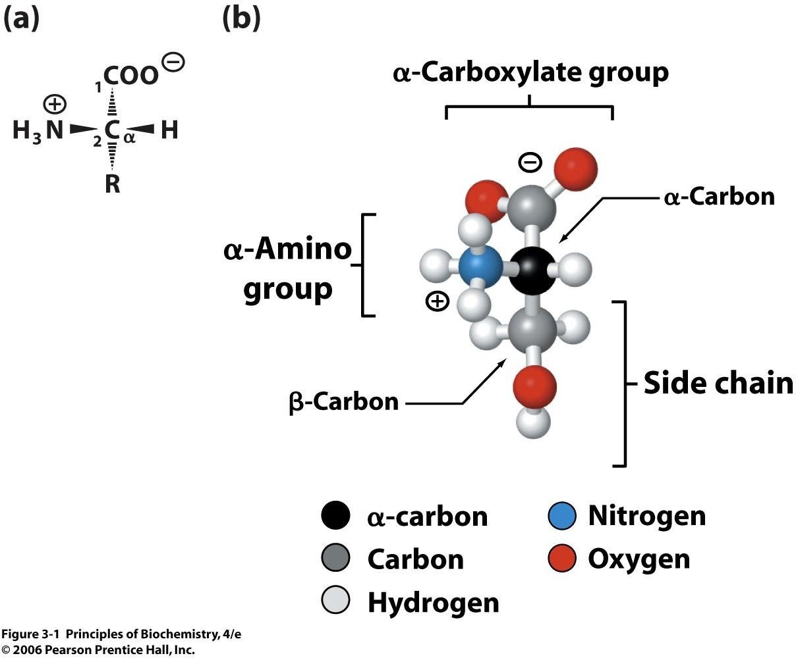
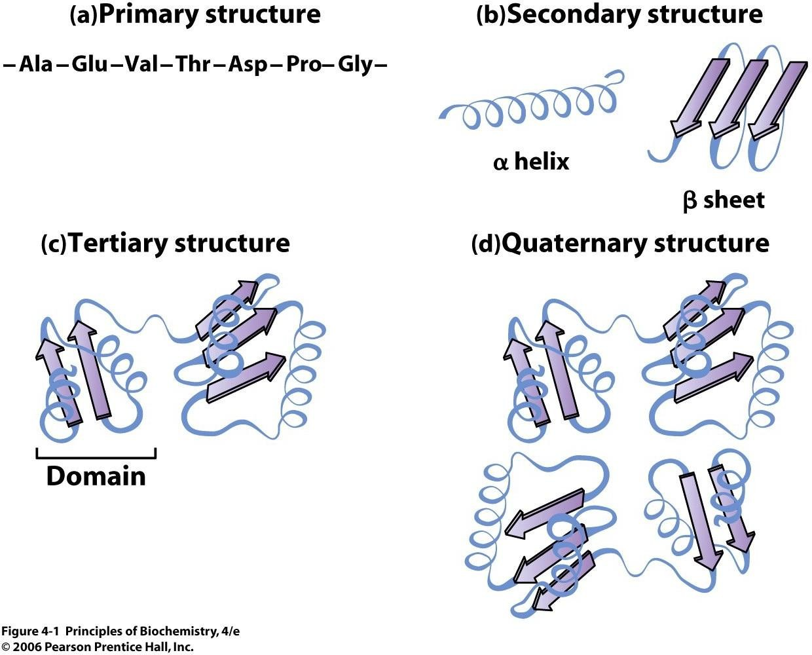

BIO103 · 第 14 章
蛋白质结构与功能
Protein Structure & Function
虚线下划线为术语；悬停查看中文、英文与释义，完整词典见“术语”。
本章目录
本讲从氨基酸的结构与性质出发，逐级讲一级、二级、三级、四级结构，再讲折叠、分子伴侣、变性与翻译后修饰，核心线索是“结构决定功能”。
本章要点
- 蛋白质占细胞干重 50% 以上，由 20 种氨基酸通过脱水缩合形成的肽键连接而成。
- 氨基酸以 α-碳为中心，连有氨基、羧基、氢与 R 基团；除甘氨酸外都有手性，蛋白质中只用 L 型。
- 中性 pH 下氨基酸以两性离子（zwitterion）存在，因此具有盐类性质。
- 肽键因 C–N 具有部分双键性质而刚性平面，不能旋转；α-碳两侧的键则可自由旋转。
- 二级结构主要是 α 螺旋与 β 折叠，靠主链之间的氢键维持。
- 三级结构由 R 基团间的氢键、二硫键、离子键、疏水作用与范德华力维持；四级结构由多条亚基组装。
- 分子伴侣协助折叠；变性破坏维持结构的非共价键与二硫键，部分蛋白可复性。
- 翻译后修饰以磷酸化最快速可逆，酶原经蛋白酶切割不可逆激活。
14.1 蛋白质的地位与生物大分子
生物大分子仍归为四类：糖类、脂质、蛋白质与核酸。以聚合物与单体的关系看：多糖由单糖组成，多肽由氨基酸组成，核酸由核苷酸组成。单体之间通过脱水缩合（condensation/dehydration reaction）连接，即失去一分子水形成共价键；反向过程是水解（hydrolysis），即用水把聚合物拆回单体。
蛋白质的重要性写在名字里：它来自希腊语 proteios，意为“第一位”。蛋白质占细胞干重的 50% 以上；多肽是由同一套 20 种氨基酸构建的聚合物；一个蛋白质由一条或多条多肽折叠、盘绕成具有特定构象的三维结构。
蛋白质结构的精确性不是随机的，而是由遗传信息决定的。氨基酸序列由基因编码，序列又决定折叠方式，折叠方式决定功能——这条因果链是本章的主线。
聚合物的多样性来自四个变量：单体的数量（链长）、单体的种类、单体的排列顺序、以及单体的空间排列。以 6 个单体、每步 20 种选择计算，可能的序列数为 20⁶ = 64,000,000，这正是蛋白质功能多样性的组合学基础。
L17 p.3–7
14.2 氨基酸的结构与手性
除脯氨酸外，所有 α-氨基酸都有相同的骨架：一个中心 α-碳α-carbon，连着一个氨基、一个羧基、一个氢原子和一个 R 基团R group (side chain)。R 基团是唯一可变的部分，它决定每种氨基酸的物理化学性质。脯氨酸的 R 基团与氨基相连成环，因此是环状氨基酸，其骨架略有不同。
R 基团可以简单到一个氢原子（甘氨酸），也可以复杂到带多种官能团的碳骨架（如谷氨酰胺）。20 种氨基酸按 R 链性质分组，这一分组与蛋白质的溶解性、以及 R 基团在折叠时的相互位置密切相关。
除甘氨酸外，氨基酸都是不对称分子，具有手性（chiral）与旋光性（optically active），存在两种对映体（enantiomers）。蛋白质中只使用 L-氨基酸L-amino acid，自然界几乎不把 D 型掺入蛋白质。
碳原子的命名也需注意：除羧基碳外，与羧基相邻的碳称 α-碳，再往下依次为 β、γ、δ、ε。大多数有机分子只是简单编号，氨基酸则用希腊字母标记，这在描述侧链修饰位置时会用到。

L17 p.8–13
14.3 酸碱性质、必需氨基酸与非标准氨基酸
氨基酸的电离状态随 pH 改变。在中性 pH 的溶液中，它们主要以两性离子zwitterion（dipolar ion）形式存在：分子整体没有净电荷，但不同部位分别带正电与负电——羧基去质子带负电，氨基质子化带正电。
正因为是两性离子，氨基酸具有许多盐类才有的物理性质：能形成晶体、熔点高、溶于水、不溶于烃类溶剂。这些性质直接影响蛋白质在水环境中的溶解与折叠。
必需氨基酸essential amino acids是人体不能自行合成、必须从食物获得的氨基酸，讲义列出：精氨酸、组氨酸、异亮氨酸、亮氨酸、赖氨酸、甲硫氨酸、苯丙氨酸、苏氨酸、色氨酸、缬氨酸。其中精氨酸带星号，属于条件必需：对幼年生物，精氨酸是达到最佳生长与发育所必需的；对成年人，它只在创伤、烧伤、小肠切除、肾衰竭等状态下才成为必需。
讲义还提到“共 6 种条件必需氨基酸，例如甘氨酸”，说明必需性并非绝对二分，而是随生理状态变化。
除 20 种标准氨基酸外，细胞中还有 300 种以上的非标准氨基酸uncommon amino acids。它们有各自的功能，但并非都参与蛋白质组成。例如瓜氨酸是精氨酸生物合成与尿素循环的中间物，硒半胱氨酸也属于此类；它们不由 DNA 直接编码，也不参与常规的蛋白质合成。
L17 p.18–21
14.4 肽键与多肽链
两个氨基酸连接时，一个氨基酸的羧基脱去羟基、另一个的氨基脱去氢，释放一分子水，形成 肽键peptide bond。反复进行这一反应，就得到多肽链。
多肽链的两端不同：一端是游离的氨基，称为 N-端N-terminus；另一端是游离的羧基，称为 C-端C-terminus。链中重复出现的原子序列（N–Cα–C–N–Cα–C…）称为多肽骨架polypeptide backbone，R 基团从骨架侧向伸出。
书写约定必须遵守：蛋白质、多肽、肽一律从 N-端写到 C-端；DNA、RNA、寡核苷酸一律从 5′-端写到 3′-端。这不是习惯问题——序列方向反了，含义完全不同，就像把 LAFOURCADE 写成 EDACRUOFAL。
细胞用有限的单体构建无穷多样的聚合物：20 种氨基酸按不同长度与顺序组合，就能产生足够多的序列，对应足够多的结构与功能。
L17 p.22–23
14.5 一级结构
蛋白质的四个结构层次中，前三个用于组织单条多肽内部的折叠，第四个描述多条多肽的组装。一级结构primary structure就是多肽的氨基酸线性序列，由肽键（共价键）连接。
肽键的几何性质决定了一级结构之上的所有折叠方式。肽键中的 C–N 键具有部分双键性质，因此肽键是刚性、平面的，不能绕 C–N 轴旋转。相反，α-碳两侧的两个键是纯单键，具有很大的旋转自由度，正是这两个可旋转的键使多肽链能够折叠成不同的二级结构。
一级结构决定高级结构：序列中的 R 基团分布决定了哪些氢键能形成、哪些疏水区能埋藏、哪些半胱氨酸能配对成二硫键。因此，即使只是一处氨基酸替换（如上一章的错义突变），也可能改变整个折叠与功能。
L17 p.26–27
14.6 二级结构：α 螺旋与 β 折叠
二级结构secondary structure是多肽骨架局部规则的折叠，由主链之间的氢键维持，不涉及 R 基团的共价连接。最常见的是两种：
α 螺旋α-helix：每条肽键的 N–H 与同一链上相隔四个肽键的 C=O 形成氢键。这个“隔四个肽键”的规律使氢键沿螺旋轴方向规则排列，R 基团伸向螺旋外侧。
β 折叠β-sheet：相邻的肽链（strand）以反平行（antiparallel）方向并排，肽键之间形成氢键，把各条链连成一片片折叠。与 α 螺旋的“链内氢键”不同，β 折叠的氢键是“链间氢键”。
同一条多肽可以同时含有 α 螺旋区与 β 折叠区，二者由转角（turn）连接。二级结构的类型由一级序列决定：哪些残基倾向形成螺旋、哪些倾向形成折叠，是序列编码的信息之一。
Clean vector diagram comparing two secondary structures: left an alpha helix drawn as a coiled ribbon with dashed hydrogen bonds between the N-H of one peptide bond and the C=O four peptide bonds away in the same chain; right an antiparallel beta sheet with two adjacent strands drawn as flat arrows pointing in opposite directions and dashed hydrogen bonds between strands. Flat 2D, thin 1.5 px strokes, muted slate blue and warm grey palette, white background, English labels, no cartoon, no gradient, no shadow.
L17 p.28
14.7 三级结构与维持作用力
三级结构tertiary structure是整条多肽在三维空间中的折叠，由 R 基团之间以及 R 基团与骨架之间的多种相互作用决定。讲义列出五类：
- 氢键：发生在极性或带电区域之间。
- 二硫键（disulfide bridge）：两个半胱氨酸的巯基（thiol）氧化形成共价键，是唯一可形成共价交联的作用。
- 离子键：带相反电荷的 R 基团之间。
- 疏水/亲水相互作用：非极性 R 基团聚集在内部，极性基团朝向表面。
- 范德华力：近距离的弱相互作用，数量众多时对紧密堆积贡献显著。
这五类作用共同把多肽链固定在一个明确而稳定的三维形状中。其中只有二硫键是共价键，其余都是非共价作用；这一点解释了为什么变性剂（如改变 pH、加盐、加热）能轻易破坏三级结构，却不一定切断肽键。
三级结构决定了蛋白质的功能表面：酶的活性口袋、抗体的抗原结合位点、受体的配体结合区，都是三级结构在空间上形成的特定形状。形状变了，功能就丢了。
L17 p.29
14.8 四级结构与球状/纤维状蛋白
四级结构quaternary structure适用于功能形式由一条以上多肽链组成的蛋白质。各条链（亚基，subunit）由与三级结构相同的力（侧链相互作用）维系；亚基可以相同，也可以不同，分别称为同源（homo-）与异源（hetero-）多聚体。按亚基数目可称为单体、二聚体、三聚体、四聚体、六聚体、八聚体等。
按整体形状，蛋白质可分为球状与纤维状两类：
| 维度 | 纤维状蛋白 | 球状蛋白 |
|---|---|---|
| 结构 | 丝状、伸长 | 折叠成紧密的球形 |
| 二级结构组成 | 通常只有一种类型的二级结构 | 常含多种二级结构 |
| 功能 | 结构支持、运动 | 酶、激素、抗体、运输分子 |
| 溶解性 | 不溶于水（疏水氨基酸比例高） | 溶于水 |
| 例子 | 角蛋白、胶原、蚕丝纤维蛋白 | 血红蛋白、肌红蛋白 |
溶解度差别的原因在 R 基团的分布：纤维状蛋白把大量疏水残基暴露在外，与水排斥；球状蛋白把疏水残基埋在内核、亲水残基留在表面，因此能与水相互作用。这一规律也解释了为什么膜蛋白难以用普通水相方法提取。

L17 p.31–33
14.9 折叠、分子伴侣与变性
一段给定序列的多肽，其二级与三级结构由序列本身决定；在天然条件下，折叠可以自发完成。讲义同时指出，大多数蛋白在细胞内可能要先经过若干阶段的折叠才能达到最终构象，因此需要分子伴侣提供有利条件。
分子伴侣chaperonin (chaperone protein)为某些蛋白的正确折叠提供有利条件。以桶状的 chaperonin 为例，过程分三步：
- 未折叠的多肽从桶的一端进入中空圆柱。
- 盖子（cap）盖上，圆柱构象改变，内部形成亲水环境，使多肽在隔离空间中折叠。
- 盖子脱开，正确折叠的蛋白被释放。
折叠错误会致病。讲义举出两例：阿尔茨海默病与淀粉样斑块（amyloid plaques）及 Tau 蛋白缠结相关；帕金森病与 α-突触核蛋白（α-Synuclein）的错误折叠相关。共同点是错误折叠的蛋白聚集，形成有毒的沉积物。
变性denaturation是蛋白质构象被破坏的过程：改变 pH、温度、盐浓度，或施加超声、X 射线、γ 射线，都会破坏维持形状的氢键、离子键与二硫键，使蛋白失去天然构象。有些蛋白在条件恢复后能重新折叠回功能构象（复性），另一些则不能——是否可复性取决于变性程度与蛋白本身。
Clean vector three-step diagram of chaperonin action: step 1 an unfolded polypeptide enters the open end of a hollow cylinder; step 2 a cap attaches and the cylinder changes shape to create a hydrophilic interior; step 3 the cap comes off and a correctly folded protein is released. Flat 2D, thin 1.5 px strokes, muted slate blue and warm grey palette, white background, English labels with step numbers, no cartoon, no gradient, no shadow.
L17 p.35–37
14.10 翻译后修饰：磷酸化与酶原激活
翻译后修饰post-translational modification (PTM)是蛋白质翻译完成后发生的化学修饰。讲义按修饰方式分四类：
- 加官能团：乙酰化、甲基化、生物素化、糖基化、糖化、羟化、氧化、PEG 化、磷酸化等。
- 加其他蛋白或肽：SUMO 化、泛素化。
- 改变氨基酸的化学性质：脱酰胺（deamidation），即天冬酰胺或谷氨酰胺侧链的酰胺基被移除或转为其他官能团。
- 结构改变：蛋白水解激活（切割）、二硫键形成、消旋化。
最常见、最快速的调控性修饰是磷酸化phosphorylation。特定羟基氨基酸的侧链（丝氨酸 Ser、苏氨酸 Thr、酪氨酸 Tyr）可被磷酸化；加磷酸或去磷酸会改变酶的三级结构，从而改变催化活性。磷酸化既可能增强也可能减弱活性，因此磷酸化/去磷酸化被用作快速、可逆的开关，按细胞需要开启或关闭代谢通路。
蛋白水解激活proteolytic activation是不可逆的另一类。许多酶以较大的无活性前体形式合成，称为酶原zymogen (proenzyme)。胰蛋白酶原（trypsinogen）由肠激酶（enteropeptidase，仅在小肠产生）切割激活为胰蛋白酶；胰蛋白酶随后又能切割并激活更多胰蛋白酶原及其他酶原（如胰凝乳蛋白酶原、弹性蛋白酶原）。
这种“级联激活”使消化酶只在小肠内被激活。若酶原在胰腺内提前激活，就会消化自身组织，导致急性胰腺炎（acute pancreatitis）。这是“定位决定功能”的一个临床例证。
Clean vector diagram of zymogen activation in the small intestine: trypsinogen, chymotrypsinogen and proelastase secreted by the pancreas; enteropeptidase cleaving trypsinogen into active trypsin; trypsin then cleaving the other zymogens into chymotrypsin and elastase, drawn as a cascade with arrows. Flat 2D, thin 1.5 px strokes, muted slate blue and warm grey palette, white background, English labels, no cartoon, no gradient, no shadow.
L17 p.39–41